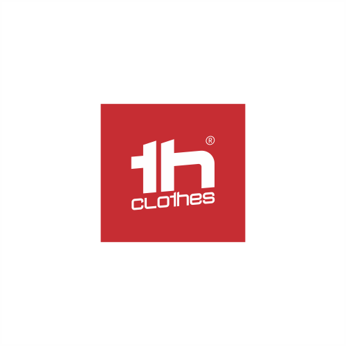
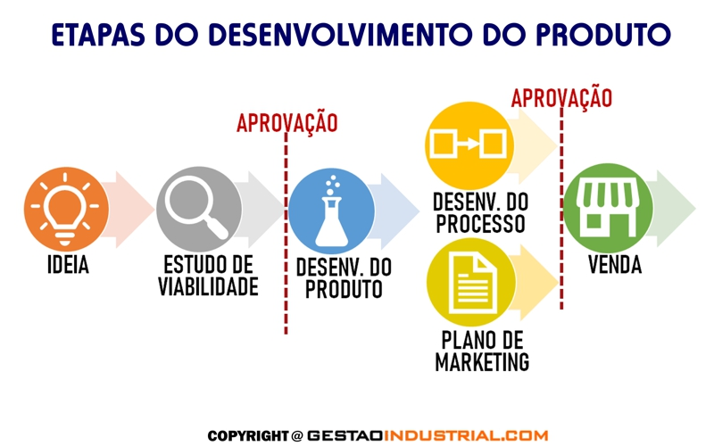

Empresas com atividade documentada nesta área
Exemplos para compreender funções e modelos de trabalho. As atividades são atribuídas às fontes oficiais consultadas; não constituem uma recomendação comercial.
Stricker
Coimbra, Portugal · sede
Desenvolvimento de produto e distribuição
Declara criação e desenvolvimento de brindes, stock e distribuição a profissionais do setor. A fonte não identifica o fabricante de cada artigo.
Ler o perfil de Stricker →Fontes: Stricker — Who we are

TH Clothes / Organizações Biscana
Batalha, Portugal · sede da titular
Marca de vestuário promocional
A TH Clothes é detida pela Organizações Biscana. A história da marca descreve desenvolvimento de produto, stock e distribuição, sem comprovar confeção própria de todas as peças.
Ler o perfil de TH Clothes / Organizações Biscana →Fontes: TH Clothes — A marca
Marca, desenho e produção
Uma marca identifica uma oferta; o seu titular pode definir desenho, materiais, cores ou apresentação. Desenvolver um produto é estabelecer características e preparar a sua realização. Um produtor transforma materiais ou componentes no artigo físico. Estas funções podem estar reunidas ou repartidas entre organizações.

O que os exemplos documentam
Intervir na definição do produto não demonstra que o titular da marca fabrica todos os artigos nas suas próprias instalações. Para distinguir desenvolvimento e produção, importa identificar quem define as características, quem transforma os materiais e que operações estão efetivamente documentadas.
Como ler uma afirmação de origem
País da sede, país de desenho, origem dos materiais e país de fabrico não são equivalentes. Uma afirmação sobre um deles não prova os restantes. Quando não existe informação pública suficiente, a origem de produção deve ficar por esclarecer. A marca também não garante, por si só, exclusividade do desenho ou capacidade de personalização.
Fontes e âmbito
Fontes oficiais consultadas para as atividades atribuídas às empresas. As explicações das funções e do percurso são sínteses editoriais; não descrevem um modelo universal nem avaliam o desempenho dos fornecedores.
- Stricker — Who we are — consulta: .
- TH Clothes — A marca — consulta: .